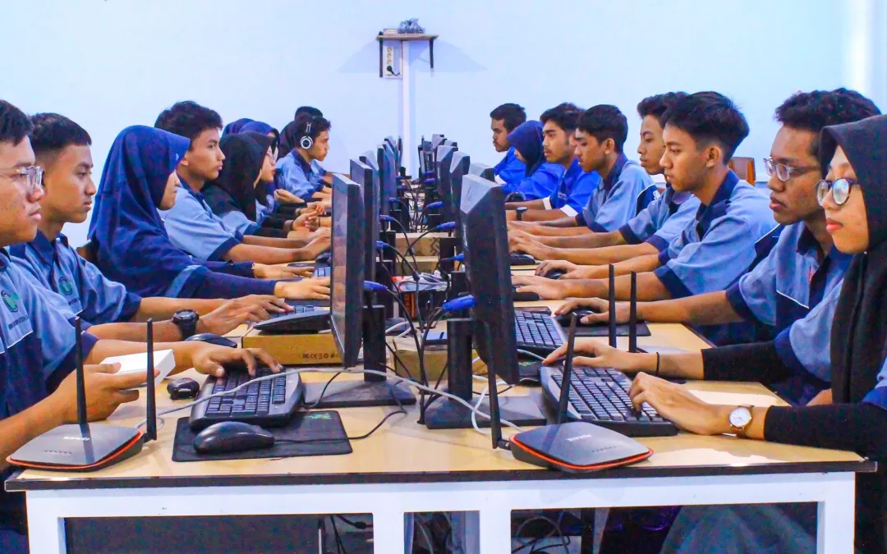
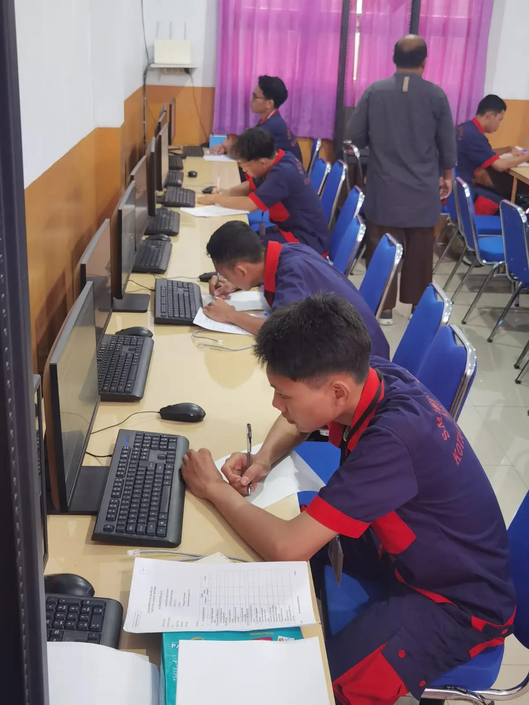
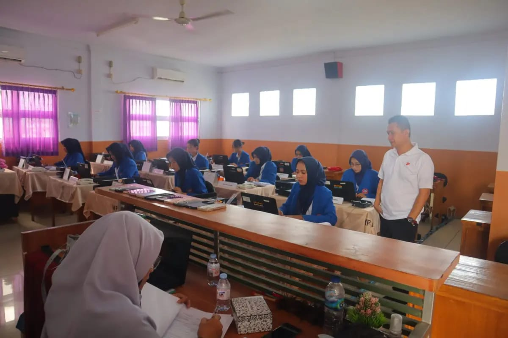
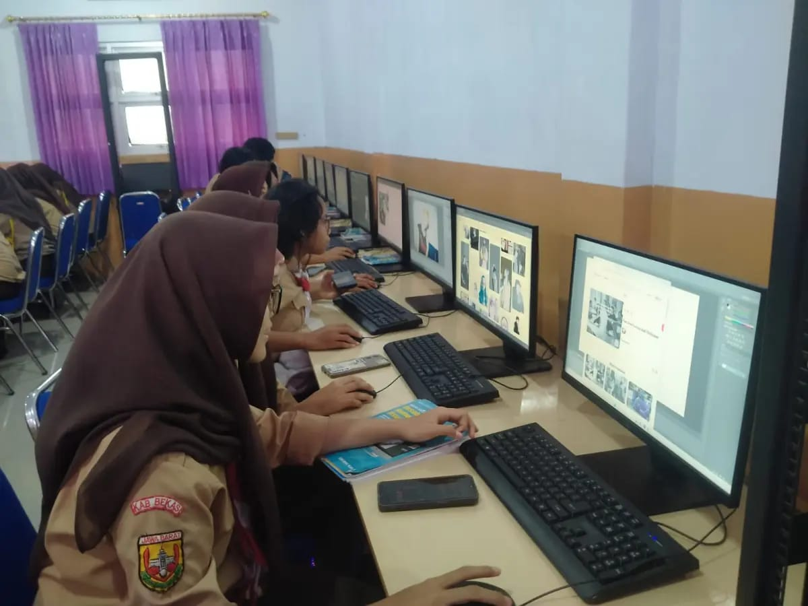

Anzil Mubarok
Saya adalah
Tentang Saya
Saya adalah siswa SMK Galajuara yang mempelajari bidang Teknik Komputer dan Jaringan (TKJ). Saya memiliki minat dalam dunia teknologi, khususnya komputer, jaringan, dan perkembangan teknologi digital. Selama belajar di jurusan TKJ, saya mempelajari berbagai hal seperti perakitan komputer, instalasi sistem operasi, konfigurasi jaringan, serta dasar-dasar troubleshooting perangkat komputer dan jaringan. Selain itu, saya juga memiliki kemampuan untuk beradaptasi dan belajar dengan cepat terhadap hal-hal baru, sehingga saya mampu mengikuti perkembangan teknologi yang terus berubah. Saya adalah pribadi yang semangat untuk terus belajar, disiplin, dan siap mengembangkan kemampuan demi mencapai tujuan di bidang teknologi informasi.
Anzil Mubarok
Saya adalah seorang siswa di SMK GALAJUARA, berfokus pada pengembangan Tehnik Komputer dan jaringan.
Saya ingin lebih efisien dalam mengerjakan tugas dan proyek yang diberikan. Dan bisa mengikuti pelajaran dengan baik.
Kompetensi Teknis
Riwayat Pendidikan
Saya harap saya bisa berkembang lebih baik lagi, lebih profesional dalam bidang teknologi informasi. Saya menempuh pendidikan di SMK Galajuara dengan jurusan Teknik Komputer dan Jaringan (TKJ). Selama belajar, saya mempelajari dasar-dasar komputer, jaringan, instalasi perangkat keras dan perangkat lunak, serta konfigurasi jaringan. Saya juga memiliki kemampuan belajar dan beradaptasi dengan cepat terhadap hal-hal baru, baik dalam pembelajaran maupun kerja sama tim.
Tehnik Komputer dan Jaringan
Saya sudah belajar selama 1 tahun di SMK GALAJUARA dan ingin terus mengasah keterampilan saya.
Siswa SMPN 37 KOTA BEKASI
Digital Innovation Labs
2023 - 2025Saya seorang alumni yang sudah lulus di SMPN 37 KOTA BEKASI.
Jurusan yang saya tekuni
Tehnik Komputer dan Jaringan
2025 - 2028Saya sedang menempuh pendidikan di jurusan Tehnik Komputer dan Jaringan.
SMK GALAJUARA
Tehnik Komputer dan Jaringan
2025 - 2028Saya sedang menempuh pendidikan di SMK GALAJUARA dengan fokus pada Tehnik Komputer dan Jaringan.
Pendidikan sebelumnya
Saya telah menempuh pendidikan di SMK GALAJUARA dengan fokus pada Tehnik Komputer dan Jaringan. Dan sebelum masuk smk saya sudah bersekolah di SMP 37 Kota Bekasi
Layanan
Saya menawarkan berbagai layanan dalam bidang teknologi informasi dan Teknik Komputer Jaringan untuk membantu mengembangkan solusi digital yang inovatif dan efisien.
Teknik Jaringan
Kemampuan dalam merancang dan mengelola infrastruktur jaringan komputer untuk organisasi.
ExploreDukungan IT
Memberikan solusi teknis dan troubleshooting untuk masalah komputer dan jaringan.
ExploreSistem Administrasi
Pengelolaan dan konfigurasi sistem operasi serta server untuk kebutuhan bisnis.
ExploreKeamanan Siber
Implementasi protokol keamanan untuk melindungi data dan sistem dari ancaman cyber.
ExploreKonsultasi IT
Memberikan konsultasi strategis tentang infrastruktur teknologi informasi yang tepat.
ExploreAnalytics
Analisis data untuk memberikan wawasan yang berharga dan mendukung pengambilan keputusan bisnis.
ExploreBackup & Recovery
Strategi backup dan disaster recovery untuk melindungi data berharga perusahaan.
ExploreWujudkan Solusi Teknologi Terbaik
Bekerja sama dengan saya untuk mengimplementasikan solusi teknologi informasi yang inovatif dan sesuai kebutuhan bisnis Anda
Portofolio Saya
Berikut adalah beberapa proyek yang telah saya kerjakan dalam bidang Teknik Komputer dan Jaringan di SMK GALAJUARA.
- Semua Karya
- Kreatif
- Digital
- Strategi
- Pengembangan
.jpg)




Wujudkan Solusi Teknologi Terbaik
Bekerja sama dengan saya untuk mengimplementasikan solusi teknologi informasi yang inovatif dan sesuai kebutuhan bisnis Anda
Ekstrakulikuler
Dokumentasi kegiatan ekstrakulikuler dan aktivitas saya di SMK GALAJUARA.

{kind=link}
{kind=link}
{kind=link}
{kind=link}
{kind=link}
{kind=link}
{kind=link}